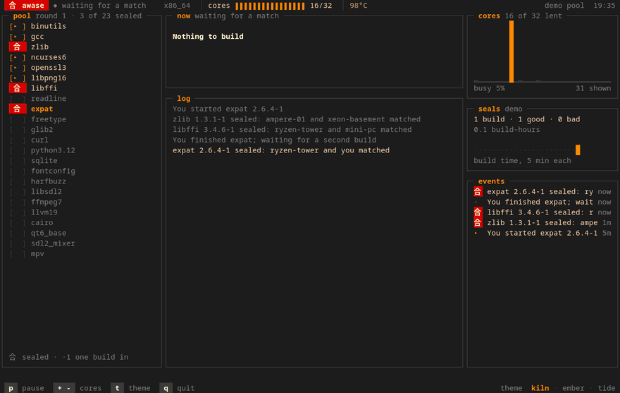

Built into the RenkuOSPorts portal · in testing
Lend your idle cores
to Renku.
合わせ awase: bringing two things together to see whether they match.
Awase builds Renku OS packages while your computer would otherwise sit idle, like SETI@home or a mining pool. Every package is built twice and published only when both builds match. That check now runs in Dru's RenkuOSPorts portal, and Awase is a build client for it, on Renku OS and on Linux servers.
package a volunteer's build 合two builds matched, published
Awase and the portal
A proposal met a server,
and they matched.
Awase started as a proposal: volunteers build every package twice, and a package ships only when both builds agree. Dru was building the RenkuOSPorts portal, a public package repository and build coordinator for Renku OS. The two-build check went into the portal, and Awase became its client.
The portal, by Dru
The repository website, the job queue and build clients, the two-build check, build priorities, automatic updates from RenkuOSPorts, and a pkgman repository per platform. It also has its own clients: a command-line one, a native one for Renku, and Linux and macOS apps that build in a Renku guest.
Awase
The two-build design, and two clients for the portal: a native Awase app for Renku OS and awase-tui for Linux servers. Both claim jobs, run a build command, upload the packages and report back, within the limits you set.
Shared rules
The same build-client API and the same build-command contract, so a build script written for one client works with the others. Awase's tests run against a stand-in that follows the portal's code.
Still open
Signing. The original proposal has clients sign their results and a person sign the repository offline. The portal checks SHA-256s but signs nothing yet. That's the next part to work out together, in the portal's issue #2.
How it works
From a recipe to your package manager,
checked twice on the way.
-
1
Register a client
Sign in to the portal and add a build client on its Clients page: a name and a platform. The secret is shown once. Give the client ID and secret to Awase.
-
2
The portal hands out jobs
When a recipe changes in RenkuOSPorts, the portal queues a job for it. Clients ask for work, and get the port that the most other waiting ports depend on first.
-
3
Two builds must match
Each job is built twice, by a different client if one is free. HaikuPorter writes file times into every package, so the portal compares contents instead of bytes: metadata, the file list and every file's SHA-256.
-
4
Published for pkgman
When the builds match, the packages are published and the platform's pkgman repository is rebuilt. Add it with
pkgman add-repo, and it updates like any other.
The app
Quiet when you're working.
Busy when you're not.
Awase builds only within the limits you set, and pauses the moment you need the machine back. On Renku OS it's a native app with hand-drawn ink-and-seal views. On a Linux server it's awase-tui, a tiled terminal client that also runs as a systemd service.
- When: only when the computer is idle, or always. Pausing stops the build's whole process group, and resuming continues it, so no work is lost.
- How much: the number of cores you lend, passed to the build.
- How hot: builds pause while the CPU is over the temperature you pick, and carry on once it has cooled 5 °C, where the machine has a sensor Awase can read.
- What you see: the build's step and live log, the published packages with the ones you built marked, your totals and the portal's events.
- When you quit: a running build is stopped and its job goes straight back to the queue for someone else.

Where it runs
Renku OS
The Awase app, native on the Be API. Choose Pool › Coordinator… and enter the portal's address and your client's ID and secret.
Awase
Linux servers
awase-tui for a VPS or a build box over SSH. One column on an 80×24 terminal, or plain log lines for systemd.
Awase
Linux and macOS desktops
The portal's own apps, which build in a Renku guest under QEMU inside a container, for every platform.
The portal
Anywhere with .NET
The portal's command-line client, with any build script that follows the contract.
The portal
Trust
Two builds or nothing.
A faulty or compromised machine can't get a package published by itself: a second build has to come out with the same contents. After a client finishes a build, other clients get the first chance at the second one, for as long as that build took. If only one client's builds matched, the package is marked self-verified, and the repository says so.
When two builds differ, a third decides, and if all three differ the job fails and the admins are told. Builds that differ only in an embedded date wait for an admin, who can approve one and has to give a reason, which is recorded.
zlib-1.3.1-1 x86_64
1c01f 9a3e 77b2 … 4e10
2c01f 9a3e 77b2 … 4e10
合Contents match. Verified: 2 clients.
libsdl2-2.32.10-3 x86_64
1"Nov 17 2026 21:13:05"
2"Nov 18 2026 09:02:44"
!Only a date differs. Waiting for an admin.
ffmpeg-7.1-2 x86_64
15e42 0b19 d3c8 … 91aa
25e42 7f60 e01d … 2c07
3Different. A third build decides.
Example results. A content digest covers a port's packages: their metadata, file list and the SHA-256 of every file, with dates and times left out.
A volunteer's machine misbehaves
Its build doesn't match the other one, so nothing is published, and a third build decides which result stands.
One person runs two clients
The portal prefers a different client, not yet a different person. A package whose matching builds came from one client is marked self-verified.
A recipe embeds the build date
The difference is found inside a date, and an admin decides. A port flagged as embedding dates is approved automatically after that.
Someone tampers with a package
Uploads are checked against their SHA-256, and pkgman checks the repository's. Signatures that tie them to a person are still to come.
Join
Bring a machine to the testing.
The portal and Awase are being tested now. Once the portal is public, anyone who signs in can register a build client, and packages are credited to its owner. Because every package needs two matching builds, more volunteers make the pool both faster and harder to fool.
What you'll need
- A Renku OS machine, or a Linux server with libcurl and ncurses.
- A build client's ID and secret from the portal's Clients page.
- A build command. Awase runs any command that follows the portal's contract. One for HaikuPorter of its own is still to do.
- No promise of uptime. If you stop mid-build, the job goes back to the queue at once.
There's no token and no money. Your packages show who built them, and you get the satisfaction of a package that works.
Roadmap
Where it stands.
Done
The two-build check
In the portal: every job built twice, compared by contents, a third build on a mismatch, and admin approval for date-only differences.
Done
Awase as a client
The Renku app and awase-tui claim, build, upload, report and give jobs back, tested against a stand-in for the portal.
Next
Real builds, in public
The portal online, Awase tested against it, and a HaikuPorter build command for Awase.
Later
Signed all the way
Clients that sign their builds, a repository signed offline, and two matching builds from two different people.
FAQ
Questions
Is this running yet?
Being tested. Dru's portal runs in Docker Compose, with a plan for hosting it on Azure, and builds every job twice. Awase's clients have been tested against a stand-in that follows the portal's code, but not yet against the real server or with real HaikuPorter builds.
Who does what?
Dru wrote the RenkuOSPorts portal: the server, the repository, the queue and the two-build check in it, and the portal's own clients. Awase brought the two-build design and its own clients, the Renku app and awase-tui.
Is it like crypto mining?
Only in shape: a pool hands out work and keeps score. There's no currency, no reward and no money. The work is compiling packages that people use.
Will it slow my computer down?
Not while you're using it, if you choose "When idle". You can also choose how many cores to lend and a temperature to pause above, and pause it at any time.
Can my machine break a package?
Not on its own. Every package needs a second build with the same contents, and a disagreement brings in a third build or an admin.
HaikuPorter builds aren't reproducible. How can two match?
They aren't byte for byte: every package records file times. So the portal unpacks each package and compares what's inside, with dates and times left out. Two builds of the same recipe then match, and a real difference still shows.
What happened to BOINC and the orchestrator in the proposal?
The proposal suggested a small pool server of its own, or trying BOINC first. The portal turned out to be that server, built for RenkuOSPorts from the start, so neither is needed now.